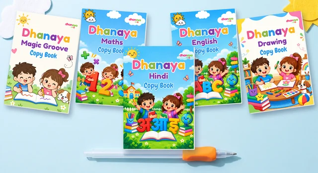
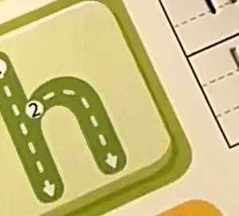

Start a calm writing time at home
A short, happy writing habit is easier than it sounds. Here is a simple plan you can try tonight.

Evenings get busy. Dinner, bath, stories, bed. A writing habit can feel like one more job on the list.
It does not have to be. A few calm minutes with a pen and a book can become a part of the day your child looks forward to. Here is how to start.
Pick a time that works
The best time is the one you can keep. Look for a quiet gap in your day, when your child is fed, rested and not in a rush.
- After breakfast on a slow morning
- After school or day care, with a snack
- Before dinner, while the food cooks
- On weekend mornings, at the dining table
Keep it short
Start with five to ten minutes. Stop while your child still wants more. That way, they will be happy to come back tomorrow.
Stop while it is still fun. That is how tomorrow starts well.
Set up a small writing spot
A set place tells your child it is writing time. It does not need to be fancy.
- Pick a table where their feet can rest and their elbows sit on top.
- Clear away toys, phones and the TV remote.
- Keep the book, pen and pen holder in one box, so setting up takes a minute.
- Sit close by, so you can cheer and help.
Make it feel like play
Writing time should feel like a game, not a test. A few small changes help a lot.
Let them choose
Put two books on the table and let your child pick one. A small choice can make them feel in charge.

Cheer the try
Wobbly lines are part of it. Cheer for the effort, not a perfect letter. Say what you see, like “You went all the way around the circle!”
When to stop for the day
Watch for signs that your child has had enough. They may wiggle, sigh or look away.
- Their grip gets very tight
- They start to rush or scribble
- They ask for a break
That is your cue. Close the book, say well done and move on. Tomorrow is a new page.
Start small, stay close and keep it light. A few calm minutes a day can add up.